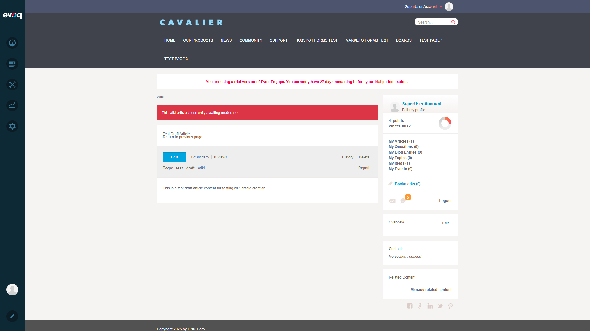

Scenario 1: Create New Article as Draft
PASSSteps Performed:
- Navigated to Wiki module at /Community/Wiki
- Clicked "Create article" button
- Entered title: "Test Draft Article"
- Selected Article Type: "Misc."
- Added content using Redactor editor
- Added tags: "draft, wiki, test"
- Unchecked "Approved" checkbox to create as draft
- Clicked "Publish" button

Form filled with draft article details (Approved unchecked)

Draft article showing "awaiting moderation" banner
Result: Article was created successfully with "This wiki article is currently awaiting moderation" banner displayed, confirming draft status.